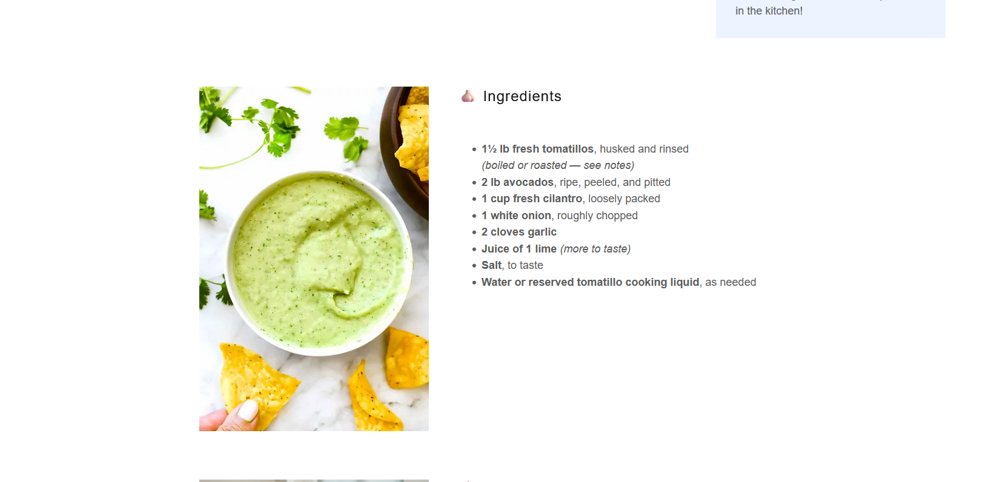

Appetizers
Avocado Tomatillo Salsa
A creamy tomatillo-avocado salsa for chips, tacos, bowls, and burritos.
Ingredients
Salsa
- 1½ lb fresh tomatillos, husked and rinsed
- 2 lb ripe avocados, peeled and pitted
- 1 cup fresh cilantro, loosely packed
- 1 white onion, roughly chopped
- 2 garlic cloves
- Juice of 1 lime
- Salt, to taste
- Water or reserved tomatillo cooking liquid, as needed
Instructions
1
Cook the tomatillos
Boil tomatillos 8–10 minutes until softened and olive-green, or roast at 425°F for 15–20 minutes until blistered and soft.
2
Blend
Add tomatillos, avocado, cilantro, onion, garlic, lime juice, and salt to a blender or food processor.
3
Adjust
Blend until smooth, adding water or reserved tomatillo cooking liquid until creamy and spoonable. Taste and adjust lime and salt.
Notes
- Boiled tomatillos taste brighter; roasted tomatillos taste deeper and slightly smoky.